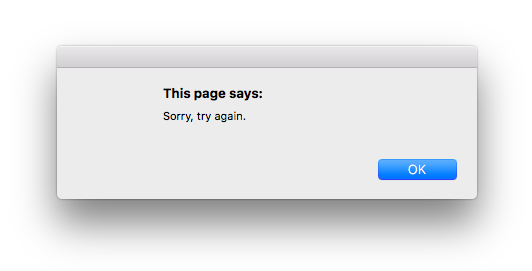

WDI Fundamentals Unit 8
Unit 8 Assignment
In this unit, we covered some game-changing concepts (pun intended). For example, can you guess what type of feature we can now begin to implement in our memory card game? If you guessed game logic, you're right!
With our new-found knowledge of arrays, we can also better simulate the cards in our game in a way that will be more versatile and require fewer lines of code.
For this unit's assignment, you will implement your knowledge of booleans, conditionals, and arrays to help with the task of storing cards and creating your game's logic.
Exercise
Requirements
Based on whether or not your users discover a match, notify them with a winning or losing message in a pop-up box using alert.
In some of our other exercises, we have used console.log to provide feedback regarding our code. However, as we start to have a more "user-facing" mindset, we need to begin to code in a way that makes more sense for the user. For our game, this means notifying the user about a win or loss with a pop-up notification rather than on the console, a place where most users don't look.
We can use alert to display a pop-up message to a user. In a JavaScript file, you could write alert('Hello, friends.'); and you would create a pop up from your browser that displays the string 'Hello, friends'.
For this assignment, you'll use an alert to display messages to your user:

Warning Alerts are annoying pop ups that can be used to show a string of data to a user. They also interfere with a user's ability to interact with a web page until he or she clicks
OK. While alerts are a great tool for seeing results as you learn JavaScript, you should avoid using them for any professional project.Note Curious about
alert? Check out its documentation here.
Instructions
- Open the
memory_gamefolder in Sublime and open themain.jsfile. You'll be writing code to work through the following steps in Sublime Text. In your
main.jsfile, create an array to store the four cards.- Create an array
cards. - The array should hold four strings - one for each of our cards.
- The strings should be
"queen","queen","king", and"king". - After creating the
cardsarray, you can delete the variables you created in the last unit's project.
- Create an array
Next we'll want to create an empty array. This will eventually hold the cards that are in play.
- Create an array
cardsInPlay. - Set its value to an empty array
[]
- Create an array
Next up, you'll create a variable to represent the first card that the user flipped.
- Create a variable
cardOne. - Store the first item in the
cardsarray in the variablecardOne.Hint: Use the array name, square brackets, and the index number to retrieve this card from the array.
- Create a variable
Now we'll want to add this first card to the
cardsInPlayarray.- Use the
push()method to addcardOneto the end of thecardsInPlayarray. Here's an example of the
push()method if you need a syntax refresher:ghosts.push('clyde');
- Use the
For testing purposes, it will be helpful to display the card that was just flipped to the console to make sure we've done things correctly.
- Use
console.log()to display the card that the user flipped - The message that is displayed in the console should say
"User flipped queen". - After saving the changes you made to
main.js, open theindex.htmlfile in Sublime Text, right click, and open the project in Chrome. Then navigate to the console in Chrome and check to make sure that this message is displayed. If not, double-check to make sure that you've saved any changes to yourmain.jsfile.
- Use
Now create a variable to represent the second card that the user flipped.
- Create a variable
cardTwo. - Store the third item in the
cardsarray in the variablecardTwo.
- Create a variable
Now we'll want to add this second card to the
cardsInPlayarray.- Use the
push()method to addcardTwoto the end of thecardsInPlayarray.
- Use the
Use
console.log()to display the card that the user flipped- The message that is displayed in the console should say
"User flipped king". - After saving the changes you made to
main.js, open theindex.htmlfile in Sublime Text, right click, and open the project in Chrome. Then navigate to the console and check to make sure that this message is displayed. If not, double-check to make sure that you've saved any changes to yourmain.jsfile.
- The message that is displayed in the console should say
Next we'll add logic to check to see if two cards have been played, because in our final game we will not want to check for a match until the user has selected two cards.
- Write an
ifstatement that checks to see if the length of the cardsInPlay array is 2. - For the condition, you can use the
lengthproperty to find out how many items are in thecardsInPlayarray and then use the===operator to see if the length is equal to 2.
- Write an
Now we'll want to add logic that checks for equality between the two cards in the
cardsInPlayarray.- Inside of the
ifstatement you created in the last step, create anif...elsestatement that checks for equality between the two cards in thecardsInPlayarray. For the condition, check to see if the first card in the
cardsInPlayarray (cardsInPlay[0]) is equal to the second card in thecardsInPlayarray.Hint: You'll want to use the
===operator here.
- Inside of the
If values are equal, execute an
alertwith the message "You found a match!"alert("You found a match!");If values are not equal, execute an
alertwith the message "Sorry, try again."After saving your
main.jsfile, open theindex.htmlfile in Sublime Text, right click, and open the project in Chrome. The alert "Sorry, try again." should pop up.Test out storing different cards in the
cardOneandcardTwovariables to make sure that everything is up and running!
Deliverable


Pushing Code Up to the Repository
In order to back up your code and track your work, you'll want to commit the changes you've made to the project's repository. You'll have to open up the terminal and cd into the correct folder that holds the cloned repository for this assignment. Once you're there, complete these three steps:
Stage your code.
git add -ACreate a version of your staged code.
git commit -m 'created game logic'Push your code to the GitHub repository.
git push origin master